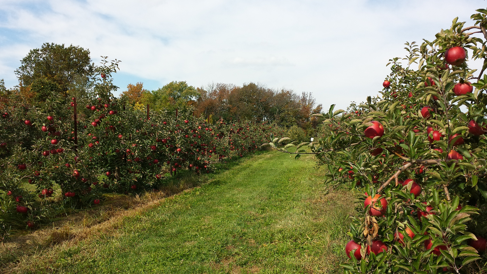
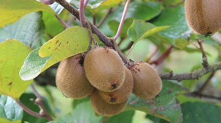
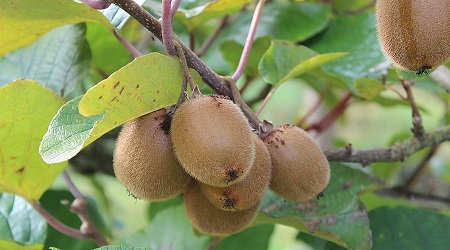

Welcome to Bountiful Foods
- Bountiful Foods -
We sell juice drinks that would be up to our customer's prefered own fruit drink mix. Our product reaches out to people in the coastal areas of Carlsbad, California.
- Coastal Areas -
South State Beach
Public beach located in Carlsbad, California. Known for being a place for swimming, surfing, skin diving, fishing, and picnicking the campground, which is led by the stairway from the beachm is very popular during the summer.
Tamarack State Beach
Ideal for the family and kids, the beach offers swimming, surfing, scuba diving, kayaking, windsurfing, fishing and beachcombing.
Terramar Beach
South of the Carlsbad Power plant and North of Palomar Airport Road. This quaint and somewhat hidden beach is a great spot for local surfers to catch a wave.
South Ponto Beach
Unlike Carlsbad State Beach to the north, this beach has few amenities, exceptfor the campgrounds, and is rather remote. This beach is popular for swimming, surfing, skin diving, fishing and picknicking, and sunbathing. Good quality sand makes this beach ideal for walking and jogging.
- Weather -
- Make Your Own Fruit Drink Mix -
Select from a our variety of fresh fruits to include in your mix. Choose three(3) of your own selection.
 

And many more!
Mix your own drink now
Total Drink Orders from Bountiful Foods
🍹0